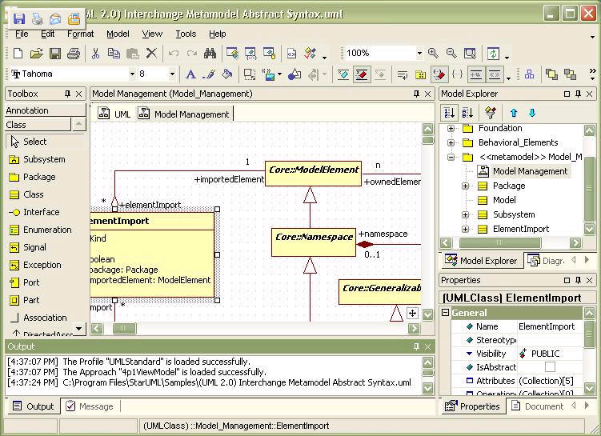

The StarUML™ Developer Guide provides essential information for developers to use the extension mechanism of StarUML™, a UML-based software modeling platform, to develop StarUML™ Add-Ins.
StarUML™ is a software modeling platform which supports UML (Unified Modeling Language). It is based on UML version 1.4 and provides UML version 2.0 notations and eleven different types of diagram. It actively supports the MDA (Model Driven Architecture) approach by supporting the UML profile concept. StarUML™ is excellent in customizability to the user¡¯s environment and has a high extensibility in its functionality.

StarUML™ provides maximum customization to the user¡¯s environment by offering customizing variables that can be applied in the user¡¯s software development methodology, project platform, and language.
Software architecture is a critical process that can reach 10 years or more into the future. The intention of the OMG (Object Management Group) is to use MDA (Model Driven Architecture) technology to create platform independent models and allow automatic acquisition of platform dependent models or codes from platform independent models. StarUML™ complies truly with UML 1.4 standards and supports UML 2.0 notations. It provides the UML Profile concept, allowing creation of platform independent models. Users can easily obtain their end products with simple scripting through external COM interfaces or writing document template.
StarUML™ provides excellent extensibility and flexibility. It provides Add-In frameworks for extending the functionality of the tool. It is designed to allow access to all functions of the model/meta-model and tool through COM Automation, and it provides extension of menu and option items. Also, users can create their own approaches and frameworks according to their methodologies. The tool can also be integrated with any external tools.
StarUML™ is a Software Modeling Platform. Why do we need a modeling platform rather than just a UML tool?